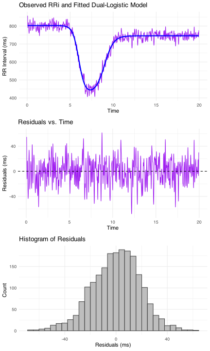

Nonlinear Modeling of R-R Interval Dynamics with CardioCurveR
CardioCurveR offers a sophisticated yet accessible framework specifically engineered for the quantitative analysis of R-R interval (RRi) dynamics, particularly in response to physiological stimuli like exercise. Modeling these dynamics accurately is crucial for understanding cardiovascular control, but it presents challenges due to the complex, non-linear nature of heart rate changes and the presence of noise and artifacts in typical recordings. The core of this package is built upon a dual-logistic mathematical model, meticulously detailed by Castillo-Aguilar et al. (2025). This specific model structure was chosen because it elegantly captures the two primary phases characteristic of many exercise protocols: the relatively rapid decrease in RRi (increase in heart rate) at the onset of exertion, followed by a distinct recovery phase where RRi increases (heart rate decreases) after the cessation of exercise.
Mathematically, the relationship between the R-R interval () and time () is expressed by the following equation:
Let’s dissect this equation and the physiological meaning imbued in its parameters:
- The equation essentially combines two logistic functions (S-shaped curves) to represent the two key transitions.
- (alpha): Baseline RRi Level. This parameter establishes the foundational, resting R-R interval duration before any significant change occurs, typically representing the pre-exercise state. It’s the value the curve approaches as time () goes towards negative infinity (or the start of the observation period).
- (beta): Primary Amplitude of Change (Drop). Beta governs the total magnitude of the decrease in RRi during the exercise onset phase. Since is typically negative for an RRi drop (heart rate increase), its absolute value represents the depth of this initial response relative to the baseline .
- (lambda): Steepness of the Drop Phase. This parameter dictates the rate of change during the initial RRi decrease. A larger absolute value of (given it’s usually negative for the drop) results in a sharper, faster transition from the resting state to the exercise state.
- (tau): Temporal Center of the Drop Phase. Tau pinpoints the time point around which the most significant portion of the RRi drop occurs. It acts as the inflection point for the first logistic component, effectively locating the exercise onset transition in time.
-
(c): Recovery Amplitude Scaling Factor. This parameter links the magnitude of the recovery phase to the magnitude of the initial drop (). The term
-c * \betadefines the amplitude of the increase in RRi during recovery. If , the recovery amplitude mirrors the drop amplitude. Values of different from 1 allow the model to capture scenarios where the recovery magnitude differs from the initial drop (e.g., incomplete recovery within the observed timeframe). - (phi): Steepness of the Recovery Phase. Analogous to , controls the steepness or rate of change during the post-exercise recovery phase (RRi increase). A larger absolute value of (usually negative in this formulation for an increasing RRi during recovery described by the second logistic term’s structure) signifies a faster return towards the baseline or a new steady state.
- (delta): Temporal Shift of the Recovery Phase. Delta introduces a time delay or advance for the recovery phase relative to the drop phase centered at . It allows the recovery curve component (the second logistic function) to be centered effectively at $t = \\tau + \\delta$, providing flexibility to accurately model the timing between the end of the exercise stimulus and the initiation of the recovery dynamics.

Beyond the core modeling equation, CardioCurveR integrates crucial pre-processing steps essential for handling real-world data. It employs advanced signal filtering techniques, specifically utilizing a zero-phase Butterworth low-pass filter. A low-pass filter is designed to remove high-frequency fluctuations, often considered noise (e.g., from measurement inaccuracies, muscle artifacts, or minor physiological variations), while preserving the slower, underlying trend of interest (the exercise and recovery response). The “Butterworth” design provides a maximally flat frequency response in the passband. Critically, the filtering is applied using a “zero-phase” technique (commonly achieved with forward-backward filtering, like the filtfilt function used internally). This ensures that the filtering process does not introduce any time lag or shift into the signal, which is vital for accurately estimating time-related parameters like and . Furthermore, CardioCurveR addresses the common issue of edge artifacts – distortions that filtering can introduce at the very beginning and end of a signal due to the filter’s initialization and settling requirements. The package includes mechanisms, like trimming a small number of samples from both ends post-filtering, to mitigate the impact of these artifacts on the subsequent modeling. This comprehensive approach ensures that the RRi data fed into the non-linear modeling stage is clean and representative of the true physiological dynamics.
Installation Guide: Getting CardioCurveR into Your R Environment
You have two primary ways to install the CardioCurveR package, depending on whether you need the official stable release or the latest development version.
1. Installing the Stable Version from CRAN (Recommended)
For most users, the recommended method is to install the package from the Comprehensive R Archive Network (CRAN). CRAN hosts official releases of R packages that have undergone checks and are considered stable. Installation from CRAN is typically straightforward as it usually provides pre-compiled versions (binaries) for Windows and macOS, avoiding the need for additional system tools.
To install the stable version of CardioCurveR from CRAN, simply run the following command in your R console:
# Installs the official release version of CardioCurveR from CRAN
# R will automatically handle downloading and installing any required
# dependency packages as well.
install.packages("CardioCurveR")Make sure you have an active internet connection. This command will download the package files from a CRAN mirror and install them into your R library, making the package ready to be loaded with library(CardioCurveR). This is generally the easiest and most reliable installation method for regular use.
2. Installing the Development Version from GitHub (Advanced Users / Latest Features)
Alternatively, if you want to access the absolute latest features, improvements, or bug fixes that might not yet be available in the official CRAN release, you can install the development version directly from its GitHub repository. This method requires the devtools package, a toolkit specifically designed for package development tasks, including installing packages from GitHub.
First, ensure you have the devtools package installed. The following R code checks if devtools is present and installs it from CRAN if necessary:
# Check if the 'devtools' package is installed.
# 'requireNamespace' checks without loading the package, and 'quietly = TRUE'
# suppresses messages. If it returns FALSE, 'devtools' is not installed.
if (!requireNamespace("devtools", quietly = TRUE)) {
# If 'devtools' is not found, install it from CRAN first.
# This requires an internet connection.
install.packages("devtools")
}Once devtools is available, you can use its install_github() function to download and install CardioCurveR directly from the specified repository (‘matcasti/CardioCurveR’):
# Use devtools::install_github() to install CardioCurveR
# directly from the 'matcasti/CardioCurveR' GitHub repository.
# This function downloads the source code, potentially compiles
# code if needed (see note below), and installs the package.
devtools::install_github("matcasti/CardioCurveR")Note on GitHub Installations: Installing from GitHub compiles the package from source. On some operating systems, this might require additional development tools: * Windows: You may need to install Rtools. * macOS: You might need Xcode and its Command Line Tools. * Linux: You typically need r-base-dev, build-essential, or similar packages providing C/C++/Fortran compilers.
Check the R documentation or messages during installation if you encounter issues related to compilation.
Which method should you choose?
- Use
install.packages("CardioCurveR")for the stable, officially released version (recommended for most users and reproducible research). - Use
devtools::install_github("matcasti/CardioCurveR")if you specifically need the latest development updates or features not yet on CRAN, and you are comfortable potentially needing extra setup steps for source compilation.
After installation using either method, you can load the package into your R session using library(CardioCurveR).
Exploring the Core Functions of CardioCurveR
The CardioCurveR package provides a suite of functions designed to streamline the process of analyzing RRi data, from cleaning and filtering to modeling and estimation. Here’s a more detailed look at the key functions:
dual_logistic(): Implementing the Core Mathematical Model
This function serves as the mathematical engine of the package. It directly implements the dual-logistic equation described previously:
Its primary role is to calculate the predicted R-R interval value(s) based on the dual-logistic model for a given set of time points and a specific set of parameter values.
This function is used internally by the estimation function (estimate_RRi_curve) during the optimization process. It’s also extremely useful for users to simulate theoretical curves (as shown in the example) or to generate predicted RRi values once a model has been fitted. See ?dual_logistic() for its documentation.
estimate_RRi_curve(): Estimating Model Parameters from Data
This is arguably the central function for users analyzing their own data. It takes empirical RRi data and finds the optimal set of parameters for the dual_logistic model that best describes that data.
This function looks to perform the non-linear regression, estimating the seven parameters () of the dual-logistic model based on observed time and RRi data.
It employs R’s powerful optim() function for numerical optimization. By default, it uses the "L-BFGS-B" method, which is a quasi-Newton algorithm capable of handling box constraints (lower and upper bounds) on the parameters. This is important for ensuring physiologically plausible parameter estimates (e.g., constraining to be positive). See ?estimate_RRi_curve() for its documentation.
filter_signal(): Pre-processing via Signal Filtering
This function handles the crucial step of noise reduction in the raw RRi signal before modeling.
The main purpose of this function is to apply a digital low-pass filter to the RRi time series to smooth out high-frequency noise while preserving the underlying physiological trend. It uses a Butterworth filter, known for its flat response in the frequency range it allows through (the passband), avoiding ripples. See ?filter_signal() for its documentation.
clean_outlier(): Adaptive Cleaning of Ectopic Beats and Noise
This function provides a sophisticated method for identifying and correcting outlier points in the RRi signal, often corresponding to ectopic beats or significant measurement errors.
This function detects physiologically implausible RRi values (outliers) and replace them with more reasonable estimates based on the local trend of the signal. See ?clean_outlier() for its documentation.
Comprehensive Example Workflow: From Simulation to Estimation
This extended example provides a practical demonstration of the entire CardioCurveR workflow, starting from simulating data that mimics real-life RRi signals, applying cleaning and filtering, fitting the model, and finally evaluating the results. This is invaluable for understanding how the different functions work together and for verifying the package’s capabilities.
First, ensure the CardioCurveR package is loaded into your current R session (assuming you have successfully installed it as per the instructions above).
# Load the package to make its functions available
library(CardioCurveR)Next, we’ll simulate an RRi dataset. We start by defining a time sequence and then using the dual_logistic() function with a known set of ‘true’ parameters to generate a perfect, theoretical RRi curve. This represents the underlying physiological process we aim to uncover later. The parameters are chosen based on typical values reported in literature, such as Castillo-Aguilar et al. (2025).
# Create a time vector from 0 to 20 minutes with steps of 0.01 minutes.
# This high resolution simulates beat-to-beat data.
time <- seq(0, 20, by = 0.01)
# Define a list containing the 'true' parameter values that will generate our signal.
# These represent a hypothetical ground truth for simulation purposes.
true_params <- list(alpha = 800, beta = -375, c = 0.85,
lambda = -3, phi = -2,
tau = 6, delta = 3) # Note: Parameter values are illustrative
# Calculate the theoretical RRi values at each time point using the dual_logistic function
# and the defined true parameters.
RRi_theoretical <- dual_logistic(time, true_params)Let’s peek at the structure of this simulated theoretical data. It’s simply a sequence of RRi values corresponding to each time point.
#> time RRi_theoretical
#> 1 0 799.999999143314
#> 2 0.01 799.999999067449
#> 3 0.02 799.999998988268
#> ... ... ...
#> 1999 19.98 743.749999907457
#> 2000 19.99 743.74999990929
#> 2001 20 743.749999911086Visualizing this theoretical curve helps understand the ideal shape defined by our parameters. We’ll use the powerful ggplot2 package for creating informative plots.
library(ggplot2) # Ensure ggplot2 is loaded
# Create a plot of the theoretical RRi curve against time
ggplot() +
# Add a line geom mapping time to x-axis and theoretical RRi to y-axis
geom_line(aes(time, RRi_theoretical), linewidth = 1, col = "purple") +
# Add informative labels and title
labs(title = "Theoretical Dual-Logistic RRi Model",
subtitle = "Generated using dual_logistic() with true_params",
x = "Time (minutes)", y = "RRi (milliseconds)") +
# Use a clean minimal theme
theme_minimal()
Real-world RRi data is never perfectly smooth. To make our simulation more realistic, we’ll add random noise. We use rnorm() to generate noise from a normal (Gaussian) distribution with a mean of 0 and a specified standard deviation (sd = 50 ms in this case), adding it to the theoretical curve. set.seed(123) ensures that the random noise generated is reproducible if you run the code again.
set.seed(123) # Set the random number generator seed for reproducibility
# Add normally distributed random noise to the theoretical RRi signal.
# sd=50 introduces realistic variability around the true curve.
RRi_simulated <- RRi_theoretical + rnorm(length(time), mean = 0, sd = 50)Let’s visualize this noisy signal. We also add vertical lines and text annotations to indicate hypothetical rest, exercise, and recovery periods, based loosely on the tau and delta parameters.
ggplot() +
# Plot the noisy simulated RRi signal
geom_line(aes(time, RRi_simulated), linewidth = 1/4, col = "purple") +
# Add vertical lines to demarcate phases (centered around tau=6 and tau+delta=9)
geom_vline(xintercept = c(6, 9), linetype = "dashed", col = "gray50") +
# Add text labels for the phases
annotate("text", x = 5.6, y = 500, label = "Rest", col = "gray50", hjust = 1, size = 3) +
annotate("text", x = 7.5, y = 800, label = "Exercise", col = "gray50", hjust = 0.5, size = 3) +
annotate("text", x = 9.4, y = 500, label = "Recovery", col = "gray50", hjust = 0, size = 3) +
# Add labels and title
labs(title = "Simulated Dual-Logistic RRi Signal with Added Noise",
subtitle = "Gaussian noise (sd=50) added to the theoretical curve",
x = "Time (minutes)", y = "RRi (milliseconds)") +
theme_minimal()
To further mimic reality, physiological signals often contain artifacts like ectopic beats. We simulate this by randomly selecting a small percentage (5%) of the data points and drastically altering their values (multiplying by 0.3 or 1.7).
set.seed(1234) # Use a different seed for this random process
# Determine the total number of data points
n_samples <- length(time)
# Randomly select indices for 5% of the samples to become 'ectopics'
ectopic_indices <- sample.int(n = n_samples, size = floor(n_samples * 0.05))
# Modify the RRi values at these indices by multiplying by either 0.3 or 1.7
# This creates artificially large deviations from the surrounding signal.
RRi_simulated[ectopic_indices] <- RRi_simulated[ectopic_indices] * sample(c(0.3, 1.7), size = length(ectopic_indices), replace = TRUE)Now, let’s visualize the signal with both noise and simulated ectopic beats. This represents the challenging ‘raw’ data we often start with.
ggplot() +
# Plot the noisy signal now including ectopic beats
geom_line(aes(time, RRi_simulated), linewidth = 1/4, col = "purple") +
# Add phase demarcation lines and labels again
geom_vline(xintercept = c(6, 9), linetype = "dashed", col = "gray50") +
annotate("text", x = 5.6, y = 500, label = "Rest", col = "gray50", hjust = 1, size = 3) +
annotate("text", x = 7.5, y = 800, label = "Exercise", col = "gray50", hjust = 0.5, size = 3) +
annotate("text", x = 9.4, y = 500, label = "Recovery", col = "gray50", hjust = 0, size = 3) +
# Add labels and title
labs(title = "Simulated RRi Signal with Noise and Ectopic Beats",
subtitle = "Represents typical challenging 'raw' data",
x = "Time (minutes)", y = "RRi (milliseconds)") +
theme_minimal()
(Aside: This simulated dataset, including noise and ectopics, is actually included within the CardioCurveR package as sim_RRi. You can load it using data(sim_RRi) and explore its documentation with ?sim_RRi for practice.)
Okay, we have our realistic but messy simulated data. The crucial question is: Can CardioCurveR effectively process this signal and recover the underlying smooth, theoretical curve we started with? This is the core challenge the package aims to solve.
Step 1: Cleaning the RRi Data
First, we address the ectopic beats using the clean_outlier() function. This function will identify and replace the artificially large deviations we introduced.
# Apply the outlier cleaning function to the simulated RRi data
# Using default settings for LOESS span, threshold, and replacement method.
RRi_cleaned <- clean_outlier(RRi_simulated)Let’s visualize the effect of cleaning. We overlay the cleaned signal (in blue) on the original messy signal (in purple).
ggplot() +
# Plot the original signal (with ectopics) faintly in purple
geom_line(aes(time, RRi_simulated), linewidth = 1/4, col = "purple", alpha = 0.5) +
# Plot the cleaned signal (ectopics replaced) in blue
geom_line(aes(time, RRi_cleaned), linewidth = 1/4, col = "blue") +
# Add labels and title
labs(title = "Effect of Outlier Cleaning",
subtitle = "Original Signal (Purple) vs. Cleaned Signal (Blue)",
x = "Time (minutes)", y = "RRi (milliseconds)") +
theme_minimal()
You should see that the large spikes (ectopics) present in the purple line have been smoothed out in the blue line, which now follows the general trend more closely.
Next, we apply the low-pass filter using filter_signal() to remove the remaining high-frequency Gaussian noise.
# Apply the zero-phase Butterworth low-pass filter to the cleaned signal
# This will smooth out the rapid fluctuations. Custom settings used to
# highlight the filtering capabilities only.
RRi_filtered <- filter_signal(RRi_cleaned, W = 0.2)
# Visualize the cleaned signal vs the filtered signal
ggplot() +
# Plot the cleaned signal (ectopics removed but still noisy) in purple
geom_line(aes(time, RRi_cleaned), linewidth = 1/4, col = "purple", alpha = 0.5) +
# Plot the filtered signal (smoothed) in blue. na.rm=TRUE handles potential NAs from trimming.
geom_line(aes(time, RRi_filtered), linewidth = 1/2, col = "blue", na.rm = TRUE) +
# Add labels and title
labs(title = "Effect of Low-Pass Filtering",
subtitle = "Cleaned Signal (Purple) vs. Filtered Signal (Blue)",
x = "Time (minutes)", y = "RRi (milliseconds)") +
theme_minimal()
(Aside: Here, we used a low-pass filter of W = 0.2 for visualization purposes. However, this configuration might be filtering too much of the physiological signal. By dafault, the filter_signal() function uses W = 0.5, which might be better for most use cases as it preserves most of the physiologically relevant fluctuations.)
The blue line should now appear much smoother than the purple line, representing our best estimate of the underlying physiological trend after removing both ectopic beats and random noise. Note that the filtered signal might be slightly shorter at the ends if trimming was applied by filter_signal().
Step 2: Estimating the RRi Model Parameters
With the pre-processed (cleaned and filtered) RRi signal, we can finally estimate the parameters of the dual-logistic model using estimate_RRi_curve().
# Fit the dual-logistic model to the filtered time and RRi data.
# The function performs the robust optimization to find the best parameters.
#
# Note: We must provide the 'time' vector that corresponds to the potentially trimmed 'RRi_filtered'.
# Pass filtered RRi and corresponding time
fit_summary <- estimate_RRi_curve(time, RRi_filtered)
# Print the primary results, focusing on the estimated parameters.
print(fit_summary)
#> RRi_fit Object
#> Optimization Method: L-BFGS-B
#> Estimated Parameters:
#> alpha beta c lambda phi tau
#> 802.7038430 -379.1634841 0.8498156 -2.8539406 -1.9124351 6.0018920
#> delta
#> 3.0004803
#> Objective Value (Huber loss): 357551.5
#> Convergence Code: 0The output shows the parameter values () estimated by the model from our noisy, artifact-laden simulated data. Compare these estimated values to the true_params we used initially (alpha = 800, beta = -375, etc.). They should be reasonably close, demonstrating the model’s ability to recover the original parameters despite of the extreme outliers and noisy signal.
We can get more detailed statistics about the fit using the summary() function.
# Obtain a more comprehensive summary of the model fit.
summary(fit_summary)
#> Summary of RRi_fit Object
#> Optimization Method: L-BFGS-B
#> Estimated Parameters:
#> alpha beta c lambda phi tau
#> 802.7038430 -379.1634841 0.8498156 -2.8539406 -1.9124351 6.0018920
#> delta
#> 3.0004803
#>
#> Objective Value (Huber loss): 357551.5
#> Residual Sum of Squares (RSS): 716606.3
#> Total Sum of Squares (TSS): 21436042
#> R-squared: 0.9666
#> Root Mean Squared Error (RMSE): 19 ms
#> Mean Absolute Percentage Error (MAPE): 2.2 %
#> Number of observations: 1991
#> Convergence Code: 0This summary typically includes goodness-of-fit metrics:
- R-squared (R²): Indicates the proportion of the variance in the filtered RRi data that is explained by the fitted model. A value of 0.966 means ~96.6% of the variance is captured, which is quite good considering the noise we added.
- RMSE (Root Mean Squared Error): Represents the typical magnitude of the error (residuals) between the model’s predictions and the actual filtered data, in the original units (ms). An RMSE of ~20 ms is reported here.
- MAPE (Mean Absolute Percentage Error): Expresses the average error as a percentage of the actual RRi values. A MAPE of 2.2% indicates the average prediction error is about 2.2% of the RRi value.
Visual diagnostics are also crucial. We use the specialized plot() method for the fitted model object.
# Generate diagnostic plots for the fitted model.
plot(fit_summary)
Examine these plots carefully:
- Fitted Line vs. Data: The top plot shows the filtered RRi signal (in purple) overlaid with the smooth predicted curve from the estimated model (in blue). The blue line should closely follow the central trend of the purple line.
- Residuals vs. Time: The middle plot shows the residuals (filtered RRi - predicted RRi) plotted against time. Ideally, these residuals should be randomly scattered around the horizontal zero line, with no discernible patterns (like curves, trends, or funnel shapes). This indicates that the model has captured the systematic variation, leaving only random noise.
- Histogram of Residuals: The bottom plot shows the distribution of the residuals. For well-behaved fits (especially if underlying noise was normal), this histogram should look roughly symmetric and bell-shaped, centered around zero.
These diagnostics suggest the model fits the processed data well.
Step 3: Comparing Estimated vs. True Model
Finally, the ultimate test in a simulation study is to compare the curve generated by the estimated parameters directly against the true theoretical curve we started with before adding any noise or artifacts.
# Calculate the RRi curve predicted by the *estimated* parameters
RRi_estimated <- dual_logistic(time, fit_summary$parameters)
# Plot the original theoretical curve (purple) and the estimated curve (blue) together
ggplot() +
# Plot the true theoretical curve
geom_line(aes(time, RRi_theoretical), linewidth = 1.0, col = "purple", linetype = "solid") +
# Plot the curve generated from the estimated parameters
geom_line(aes(time, RRi_estimated), linewidth = 1.0, col = "blue", linetype = "dashed") +
# Add labels and title for comparison
labs(title = "Comparison: True vs. Estimated RRi Model Curves",
subtitle = "True Underlying Curve (Purple) vs. Model Estimated from Noisy Data (Blue)",
y = "RRi (milliseconds)", x = "Time (minutes)") +
theme_minimal()As you can observe from this plot, the dashed blue line (estimated model) closely overlays the solid purple line (true underlying process). This visually confirms that the CardioCurveR workflow, including robust cleaning, filtering, and parameter estimation, was successful in reverse-engineering the fundamental physiological dynamics even from a significantly corrupted signal.
This comprehensive example walked through simulating realistic RRi data, applying essential pre-processing steps (clean_outlier, filter_signal), estimating the core physiological parameters using the robust estimate_RRi_curve function, and evaluating the fit both statistically and visually. The successful recovery of the underlying theoretical curve highlights the power and utility of CardioCurveR for analyzing complex RRi dynamics.
We encourage you to experiment with this workflow, perhaps modifying the noise levels, the number of ectopic beats, or even the true parameters, to further explore the capabilities and robustness of modeling RR interval dynamics with CardioCurveR!
For a more basic and introductory guide, go check the Get Started article, where we cover the same workflow with minimal additional code, best for newcomers and beginners.
Enjoy your analyses!